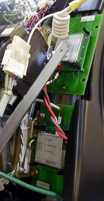
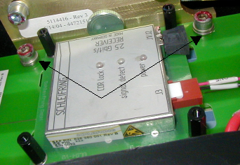
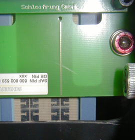

Operating Documentation
Direction 5196839-800, Rev# 6
RT16 and Xtra Service Info Adv
Operating Documentation |
| Required Persons | Preliminary Reqs | Procedure | Finalization |
|---|---|---|---|
| 1 | Timing Not Applicable | 25 mins | 10 mins |
| Last Revised: | 23 August 2005 |
| Item | Qty | Effectivity | Part# | Manufacturer | |
|---|---|---|---|---|---|
| Standard FE Tool Kit | 1 | - | - | - | |
| Lock-Out Tag-Out Kit | 1 | - | - | - | |
| Cover Dolly | 1 | - | - | - | |
| Item | Qty | Effectivity | Part# | Manufacturer | |
|---|---|---|---|---|---|
| Dual Channel Fiber Receiver | 1 | - | - | - | |
| Follow ALL required safety and PPE procedures customary for your organization, when working on this product. | |
| Condition | Reference | Eff |
|---|---|---|
Only trained service personnel should service the GE CT Scanner. | - | - |
| POTENTIAL FOR SHOCK. | |
| VOLTAGE MAY BE PRESENT. | |
| Potential for injury if covers removed and power is left ON. Always remove the right side cover first, and turn OFF power at the service switches. |
Remove the gantry right side cover (see Gantry Side Covers Removal and Re-install)
| Always turn OFF the HVDC before the 120 VAC. Turning OFF 120 VAC power before HVDC power can result in equipment damage. | |
Turn OFF the three (3) main power switches (HVDC, 120VAC, and Axial Drive) on the Service Switch Panel (SSP).
Illustration 1: Service Switch Panel

The receivers are located below the Rx / Tx power supply tray. Remove the top slipring cover to gain access to the receivers.

Remove the power and fiber cables from the failed receiver.
Remove the two (2) M6 hex head screws.

Remove the receiver and replace.
| NOTE: | Fiber cables are keyed and should be replaced in the same receiver as removed. |
Install the two (2) M6 hex head screws, and two (2) cables.
Verify antenna gap and alignment adjustments for both.

Remove the A1 Lock-Out Tag-Out. Turn ON the gantry service switches, and power up the console.
With a DVM, check the voltage on the supply.
Install all removed gantry covers. Be sure to reconnect all top cover fan connections. Check that no cables are left in the rotating path. Return dollies to storage areas.
Complete a hardware reset
Acquire 10 scouts: (120kvp/40ma, 1000mm table movement)
Acquire 100 axials: ( 120 kvp / 80ma, 0.5 sec.scans)
Acquire ten (10) helical: (120kvp / 40ma, 30 sec. Scans) Verify No increase in corrected or uncorrected FEC errors.